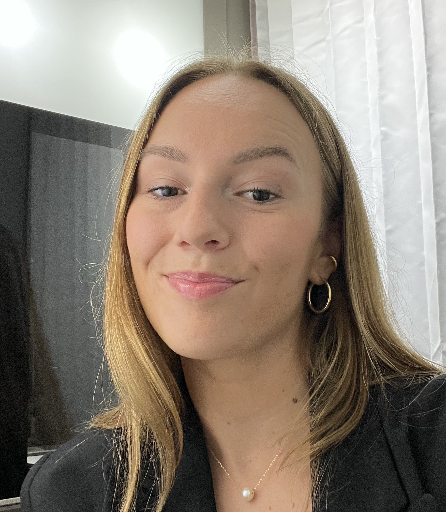
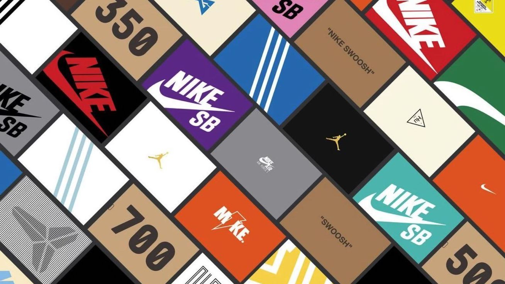
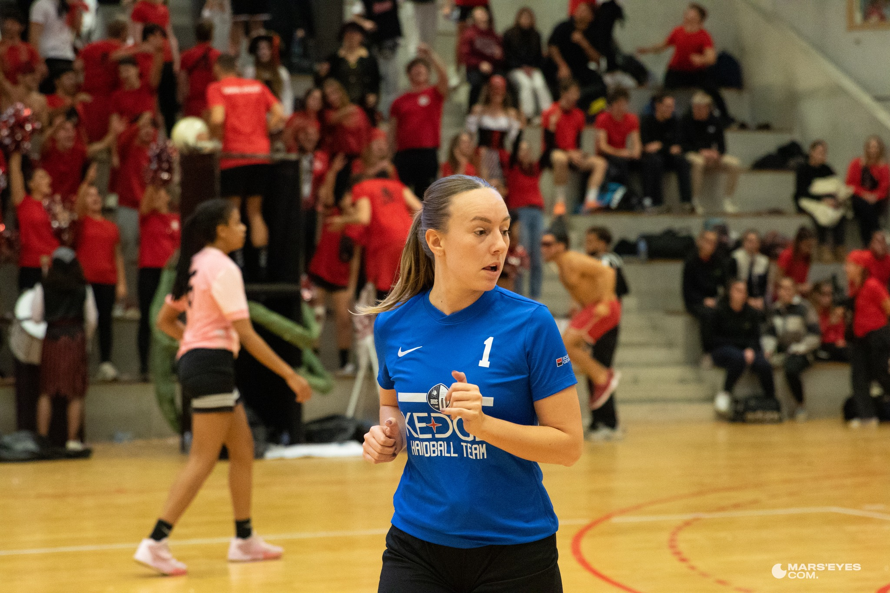

Clara Ollier's life
Welcome into my life ! Let's talk about my hobbies. For more professional information you can scan this QR Code to check my Linkedin profile.

My hobbies linked to my professional experiences
Sneakers is one of my favourite hoobie. I worked as a saleswoman in a sneakers shops for 3 years and it learns me to be passionated about sneakers and to stay awake about each drop, each day.

This passion is linked to my professional project. I would like to work as a product manager in a sport brand. I could have a carreer in a marketing position to offer the right products, to the rights consumers, in the right place, at the right moment.
The role of sport in my life

I played basketball for 8 years. You can have a look at me during the Derby de la Provence that I played with Kedge in December. My whole family in the basketball world and I love it !
Collective sport brings many values and competencies as :
Team work
Solidarity
Leadership
How passion is useful in professional life
My sport passion can be incredibly useful in my future professional life in many ways. Indeed, generally, when you are passionate about something, you are more likely to be motivated to pursue it. Also, passionate individuals tend to have a drive for excellence in their work. Finally, passionate individuals are often seen as natural leaders. They are able to inspire and motivate others, and their enthusiasm for their work can be contagious.
I'll hopefully enjoy all these assets in my professional career thanks to my sport passion.